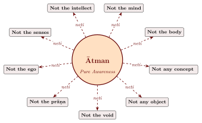
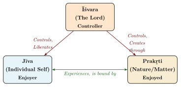
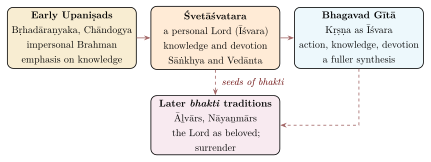

Chapter 4: The Mukhya Upaniṣads — Part III¶
In the beginning, dear boy, this was Being alone, one only without a second. It thought, “Let me become many. Let me bring forth.”
— Chāndogya Upaniṣad 6.2.1–3
This chapter reads the two oldest and longest Upaniṣads, the Chāndogya and the Bṛhadāraṇyaka, and the latest of the eleven usually counted as principal, the Śvetāśvatara. Most of the doctrines that later Vedānta systematised are first found in these texts. Because the two oldest Upaniṣads are also our best evidence for the world in which the teaching began, three sections follow them: on their ritual meditations, on the women who appear in them, and on the kings, brahmins and patrons among whom they were taught. The chapter closes with two further early Upaniṣads outside the ten-text canon, the Kauṣītaki and the Maitrī.
4.1 The Chāndogya Upaniṣad¶
4.1.1 Overview and Vedic Affiliation¶
The Chāndogya Upaniṣad is one of the two oldest and most extensive Upaniṣads (alongside the Bṛhadāraṇyaka). It belongs to the Sāmaveda, specifically the Chāndogya Brāhmaṇa. The name derives from the chandoga priests who chant the hymns of the Sāmaveda.
Chāndogya Upaniṣad — Quick Reference
| Veda: | Sāmaveda |
| Structure: | 8 prapāṭhakas (chapters) |
| Style: | Prose with embedded verses |
| Length: | One of the longest Upaniṣads |
| Central Themes: | Tat tvam asi; Sad-Vidyā; meditations on Oṃ and Sāman |
| Key Figures: | Uddālaka Āruṇi and Śvetaketu; Sanatkumāra and Nārada |
4.1.2 The Sad-Vidyā: The Teaching of Being¶
The sixth chapter contains the Sad-Vidyā (the Knowledge of Sat, Being), taught by Uddālaka Āruṇi to his son Śvetaketu. For the Vedānta schools it became the central text on the relation between the self and the ground of the world, and it is the locus classicus of Upaniṣadic teaching method.
The young Śvetaketu, sent away for Vedic study at the age of twelve, returns home at twenty-four, “conceited, considering himself learned, and arrogant” (6.1.2). His father asks:
uta tam ādeśam aprākṣyaḥ yenāśrutaṃ śrutaṃ bhavaty amataṃ matam avijñātaṃ vijñātam iti
Translation: “Have you asked for that instruction by which the unheard becomes heard, the unthought becomes thought, the unknown becomes known?”
— Chāndogya Upaniṣad 6.1.3
Śvetaketu, humbled, asks his father to teach him. Uddālaka begins with three illustrations: by knowing a lump of clay, all things made of clay are known, “the modification being a verbal handle, a mere name”; so too with copper and iron (6.1.4–6; Section 6.4.2). He then teaches that in the beginning there was Sat (Being) alone, one without a second. Being thought, “Let me become many”, and the world emerged through a process of differentiation — first heat (tejas), then water (ap), then food (anna).
Each section of the teaching that follows concludes with a refrain:
tat tvam asi, Śvetaketo
Translation: “That thou art, O Śvetaketu!”
— Chāndogya Upaniṣad 6.8.7 et seq.
The sentence is repeated nine times in the sixth chapter, each time after a different illustration (Table 4.1). The repetition drives the teaching home from several sides, and the meaning of the refrain, which the schools later disputed, is examined in Section 5.4.
| No. | Analogy | Teaching |
|---|---|---|
| 1 (6.8) | Sleep, hunger and thirst | In deep sleep one “merges with Being”; Being is the root of food, water and heat |
| 2 (6.9) | Bees and honey | Nectar from many trees becomes one honey; creatures merging in Being do not know “I am this one” |
| 3 (6.10) | Rivers and ocean | Rivers become one in the ocean and no longer know “I am this river” |
| 4 (6.11) | A great tree and its sap | The tree lives while pervaded by life (jīva); the body dies, but life does not |
| 5 (6.12) | The banyan fruit and seed | Cutting the seed, one sees nothing; from that subtle essence the great tree grows |
| 6 (6.13) | Salt in water | Invisible, the salt is tasted everywhere in the water |
| 7 (6.14) | A man blindfolded and left far from Gandhāra | Directed by others, he finds his way home; so one who has a teacher knows |
| 8 (6.15) | A dying man surrounded by relatives | His speech merges into mind, mind into breath, breath into heat, heat into the highest deity |
| 9 (6.16) | The accused man and the heated axe | The truthful man is not burned; the untruthful is |
The method is as instructive as the doctrine.
Uddālaka’s Method of Teaching
-
Concrete before abstract: each principle is first illustrated by a tangible, observable phenomenon before it is stated in general terms.
-
Question-driven learning: Śvetaketu’s requests for further instruction drive the dialogue forward.
-
Repetition with variation: the refrain is repeated in nine different contexts, so that the teaching is approached from several sides.
-
Demonstration: the pupil is asked to perform simple experiments — fasting for fifteen days to observe the dependence of mind on food (6.7), splitting the banyan seed (6.12), dissolving salt in water (6.13) — rather than accept the doctrine on authority alone.
4.1.3 Other Notable Teachings¶
Beyond the Sad-Vidyā, the Chāndogya contains:
-
The Bhūman Vidyā (Chapter 7): Nārada approaches Sanatkumāra and progressively learns that behind name, speech, mind, will, thought, contemplation, understanding, strength, food, water, fire, space, memory, hope, and life — there is the Bhūman (the Infinite), which alone is true happiness.
-
The Dāhara Vidyā (Chapter 8): Meditation on the tiny space (dāhara ākāśa) within the heart, which contains within itself the entire universe; and the instruction of Indra by Prajāpati, who leads him from the body through the dreaming and sleeping self to the self beyond them (8.7–12).
-
The Pañcāgni Vidyā (Chapter 5): The doctrine of the five fires, explaining the process of rebirth through a cosmic sacrificial framework (Section 6.6.2).
-
The story of Satyakāma Jābāla (4.4): A boy who does not know who his father is reports truthfully what his mother told him; the teacher Hāridrumata Gautama concludes that “no non-Brāhmaṇa could speak thus” and accepts him. Modern readers often cite the story as valuing character over birth; within the text, however, truthfulness is treated as a sign of Brāhmaṇa birth, so the story confirms rather than abolishes the varṇa criterion for Vedic study.
4.2 The Bṛhadāraṇyaka Upaniṣad¶
4.2.1 Overview and Vedic Affiliation¶
The Bṛhadāraṇyaka Upaniṣad (bṛhat = great, āraṇyaka = forest text) is the longest of the Upaniṣads and covers more ground than any other. It belongs to the Śukla Yajurveda and forms the concluding portion of the Śatapatha Brāhmaṇa (book 14). It survives in two recensions, the Kāṇva and the Mādhyandina; Śaṅkara commented on the Kāṇva.
Bṛhadāraṇyaka Upaniṣad — Quick Reference
| Veda: | Śukla Yajurveda (Śatapatha Brāhmaṇa 14) |
| Structure: | 6 adhyāyas in 3 sections (kāṇḍas) |
| Length: | The longest of all Upaniṣads |
| Style: | Prose with embedded verses |
| Central Themes: | Aham Brahmāsmi; nature of Ātman; Yājñavalkya’s teachings |
| Key Figures: | Yājñavalkya, Maitreyī, Gārgī, Janaka |
4.2.2 The Three Sections (Kāṇḍas)¶
Table 4.2 sets out the structure of the Bṛhadāraṇyaka in its three sections.
| Kāṇḍa | Chapters | Content |
|---|---|---|
| Madhu Kāṇḍa | 1–2 | The “Honey” section: the Aśvamedha allegory; the Madhu Vidyā; Aham Brahmāsmi |
| Yājñavalkya (or Muni) Kāṇḍa | 3–4 | Yājñavalkya’s debates at Janaka’s court; dialogue with Maitreyī |
| Khila Kāṇḍa | 5–6 | Supplementary teachings; meditations; lineage of teachers |
4.2.3 Yājñavalkya¶
The central figure of the Bṛhadāraṇyaka is Yājñavalkya, the most fully drawn philosophical personality of the Upaniṣads. The text presents him in three settings: the debate at Janaka’s court (chapter 3), the private instruction of Janaka (chapter 4), and the dialogue with his wife Maitreyī (2.4 and 4.5).
The debate at Janaka’s court¶
King Janaka of Videha announces a prize of a thousand cows with gold tied to their horns for the most learned Brāhmaṇa. Yājñavalkya tells his pupil to drive the cows home before the contest has begun, and then answers his challengers one by one at the assembly (brahmodya) convened by the king (3.1–9). The questions move from the sacrifice to death, the inner self, the “thread” and the “inner controller” of the world, and the imperishable, so that the answers build a cumulative case about the Ātman (Table 4.3). The social setting of the contest is examined in Section 4.5.
The contest ends violently. After the long exchange on the number of the gods, Yājñavalkya turns the tables and asks Śākalya about “the person taught in the Upaniṣads”, warning that his head will shatter if he cannot answer; Śākalya cannot, and his head shatters (3.9.26). The same threat had been used earlier to silence Gārgī (3.6). The motif belongs to the older brahmodya contests, in which failure to answer a riddle was believed to carry real danger (Black 2007). Later readers took it as a warning that ultimate questions are not mere debating points; read historically, it also shows how much was at stake, in prestige and in wealth, for the brahmins who competed.
Maitreyī¶
In the dialogue with Maitreyī (2.4 and 4.5), Yājñavalkya, preparing to leave the household, offers to divide his wealth between his two wives. Maitreyī asks: “If the whole earth, full of wealth, were mine, would I be immortal thereby?” Yājñavalkya replies: “No. Your life would be like that of the wealthy. There is no hope of immortality through wealth.” Maitreyī answers: “What should I do with that by which I do not become immortal? Teach me, Sir, what you know.”
na vā are patyuḥ kāmāya patiḥ priyo bhavaty ātmanas tu kāmāya patiḥ priyo bhavati
Translation: “Verily, it is not for the sake of the husband that the husband is dear, but for the sake of the Self that the husband is dear…”
— Bṛhadāraṇyaka Upaniṣad 2.4.5
Yājñavalkya goes on to teach that all love and desire derive from the Ātman, which is therefore to be seen, heard, reflected on and contemplated (2.4.5; Section 5.9).
4.2.4 The Neti Neti Teaching¶
Yājñavalkya’s description of the Ātman is the negation neti neti (“not this, not this”; Figure 4.1):
sa eṣa neti nety ātmā / agṛhyo na hi gṛhyate / aśīryo na hi śīryate / asaṅgo na hi sajyate / asito na vyathate na riṣyati
Translation: “This Self is (described as) ‘not this, not this.’ It is incomprehensible, for it cannot be comprehended; indestructible, for it cannot be destroyed; unattached, for it does not attach itself; unfettered, it does not suffer, it is not injured.”
— Bṛhadāraṇyaka Upaniṣad 3.9.26

4.2.5 The Prayer of the Bṛhadāraṇyaka¶
The Bṛhadāraṇyaka also contains a prayer that is still recited widely. In the text it is a formula (abhyāroha) muttered by the sacrificer during the chanting of the pavamāna hymns, and the Upaniṣad itself explains each line (1.3.28):
asato mā sad gamaya
tamaso mā jyotir gamaya
mṛtyor māmṛtaṃ gamaya
Translation:
“From the unreal, lead me to the Real.
From darkness, lead me to Light.
From death, lead me to Immortality.”
— Bṛhadāraṇyaka Upaniṣad 1.3.28
4.3 Ritual, Correspondence and Meditation: The Vidyās¶
A reader who knows the Chāndogya and the Bṛhadāraṇyaka only from the passages quoted so far will be surprised by the rest of them. Much of both texts is about ritual: the meaning of the chants, the hidden identities of the sacrificial horse, the correct offering into the breaths, rites for wealth and for the conception of a son. Olivelle stresses in the introduction to his translation that these concerns are not a preface to the philosophy but the setting from which it grew (Olivelle 1998, 1996). The Upaniṣads continue the Brāhmaṇas’ search for the hidden connections (bandhu, upaniṣad; Section 1.1) between three domains: the ritual (adhiyajña), the cosmos and its deities (adhidaivata), and the human person (adhyātma). To know the connection is to command what it connects.
The opening of the Bṛhadāraṇyaka (1.1) is typical. The horse of the royal horse-sacrifice (aśvamedha) is identified, limb by limb, with the universe: the dawn is its head, the sun its eye, the wind its breath, the year its body. The Chāndogya begins (1.1–2.24) with meditations on the chanted portion of the Sāman, the udgītha, identified with Oṃ. A chain of essences leads from the beings to the earth, the waters, the plants, man, speech, the verse and the chant, and the udgītha is declared the essence of essences (1.1.2–3). The “fivefold” and “sevenfold” Sāman are then correlated with the worlds, the rains, the seasons, the animals and the breaths. In the Chāndogya’s own “honey doctrine” (3.1–11) the sun is the honey of the gods, produced from the hymns of the four Vedas as bees make honey from flowers. A person’s life is interpreted as a soma sacrifice, its three periods as the three pressings (3.16–17). In the “fire-offering in the breath” (prāṇāgnihotra, 5.19–24) the first five mouthfuls of a meal are offered to the five breaths, an internalised form of the daily fire-offering. The supplementary chapters of the Bṛhadāraṇyaka (5–6) contain short meditations, among them the thunder’s “da da da” read as the injunctions to self-restraint, giving and compassion (5.2), the meditation on the Gāyatrī (5.14), a “stirred drink” (mantha) rite for attaining greatness (6.3; compare Chāndogya 5.2), and the procreative rites of 6.4.
These meditations are called vidyās or upāsanās: in each the worshipper contemplates one thing as another, the chant as Oṃ, the breath as the sacrificial fire, Brahman as the space in the heart (Table 4.4). The third chapter of the Brahmasūtra later set out to decide which vidyās taught in different texts are one and the same and may be combined (Section 11.2). Interpreters have placed this material in very different ways. In Advaita the upāsanās are meditations on the qualified (saguṇa) Brahman; they purify the mind and may lead after death, by the path of the gods, to gradual liberation (krama-mukti), but the knowledge of the attributeless Brahman alone liberates directly. The theistic schools give meditation and worship a more central place. Historians, for their part, read the ritual correspondences as the matrix of the philosophy: the doctrine that the self within the heart is the essence of the whole world (Chāndogya 3.14) is the last term of a long search for the essence (rasa) and the hidden link.
| Vidyā | Source | Nature and Object of Meditation |
|---|---|---|
| Udgītha Vidyā | Chānd. 1.1–9 | Meditation on the udgītha (the chanted Oṃ of the Sāman) as the essence of all things |
| Madhu Vidyā | Chānd. 3.1–11; Bṛhad. 2.5 | The sun as the honey of the gods (Chāndogya); the mutual dependence of all things, each “honey” to the others (Bṛhadāraṇyaka) |
| Śāṇḍilya Vidyā | Chānd. 3.14 | Meditation on Brahman as the Self within the heart, “greater than the great” |
| Pañcāgni Vidyā | Chānd. 5.3–10; Bṛhad. 6.2 | The five cosmic fires; the cycle of rebirth; the two paths (Devāyana, Pitṛyāna) |
| Vaiśvānara Vidyā | Chānd. 5.11–24 | Meditation on the cosmic Self as the universal fire, ending in the fire-offering in the breath |
| Sad-Vidyā | Chānd. 6 | Meditation on Being (Sat) as the sole reality; Tat tvam asi |
| Bhūman Vidyā | Chānd. 7 | Progressive meditation from name through speech, mind, will, etc., to the Infinite |
| Dāhara Vidyā | Chānd. 8.1 | Meditation on the tiny space within the heart as containing the entire universe |
| Gāyatrī Vidyā | Bṛhad. 5.14 | Meditation on the Gāyatrī verse and its feet as the worlds, the Vedas and the breaths |
4.4 Women Philosophers in the Bṛhadāraṇyaka Upaniṣad¶
The Bṛhadāraṇyaka Upaniṣad features the two best-known women thinkers of the Vedic tradition: Gārgī Vācaknavī and Maitreyī. Their presence matters for the history of women in early Indian intellectual life, and it needs to be read carefully, neither inflated nor dismissed.
4.4.1 Gārgī Vācaknavī: The Philosopher-Debater¶
Gārgī, the daughter of Vacaknu, is one of the challengers of Yājñavalkya at King Janaka’s philosophical assembly (Bṛhad. 3.6 and 3.8). She presses her questions further than any other challenger, asking: “On what is space (ākāśa) woven, like warp and woof?” Yājñavalkya responds with the concept of the Akṣara (the Imperishable):
etad vai tad akṣaraṃ gārgi brāhmaṇā abhivadanty asthūlam anaṇv ahrasvam adīrgham
Translation: “That, O Gārgī, which the knowers of Brahman call the Imperishable (Akṣara), is neither gross nor subtle, neither short nor long…”
— Bṛhadāraṇyaka Upaniṣad 3.8.8
Gārgī is the only woman among Yājñavalkya’s challengers and the only one who questions him twice. She is portrayed not as a passive listener but as a formidable dialectician; on her first round Yājñavalkya silences her with the warning “do not question too much, lest your head shatter” (3.6), and on her second she frames her questions as two arrows aimed at him (3.8.2) before acknowledging his victory.
4.4.2 Maitreyī: The Seeker of Immortality¶
The Maitreyī dialogue (Bṛhad. 2.4 and 4.5), summarised above, presents her as the seeker who prefers the knowledge of immortality to wealth. The later version (4.5.1) introduces her with a telling contrast: of Yājñavalkya’s two wives, “Maitreyī was a discourser on Brahman (brahmavādinī), while Kātyāyanī had only a woman’s understanding (strīprajñā).”
Reading the Evidence on Women
Gārgī and Maitreyī show that at least some women of the late Vedic period could take part in philosophical discussion and be remembered for it; later tradition honours them as brahmavādinīs. The evidence is nonetheless thin and exceptional. They are two named women among dozens of male teachers; the phrase “a woman’s understanding” presupposes that ordinary women were not expected to engage in such enquiry; and the same Upaniṣad (6.4) contains procreative rites that treat the wife largely as an object of ritual control. The later Dharmasūtras and Manusmṛti (c. 2nd century CE) restricted women’s access to Vedic study and initiation further. It is therefore more accurate to say that the Upaniṣads preserve memorable exceptions within a patriarchal society than that they describe an age of equality later lost (Black 2007).
4.5 Kings, Brahmins and Patrons: The Social World of the Early Upaniṣads¶
The dialogues of the Bṛhadāraṇyaka and Chāndogya are set in a recognisable society. They take place at royal courts, at sacrifices and in the households of teachers, in the late Vedic kingdoms of northern India: the Kuru-Pañcāla country, Kāśī, Videha and, in the north-west, Kekaya. Brahmins travel to compete for patronage, kings sponsor sacrifices and contests, and wealth is counted in cattle and gold. Reading the narrative frames together with the doctrine shows who taught, who learned, who paid and who was left outside the circle (Black 2007).
4.5.1 Courts, Contests and Cattle¶
The great debate of Bṛhadāraṇyaka 3 (Section 4.2.3) begins with a sacrifice. Janaka of Videha performs it with lavish fees (bahudakṣiṇa), and the brahmins of the Kuru-Pañcāla country assemble for it. Wishing to know which of them is the most learned, the king sets apart a thousand cows with ten measures (pāda) of gold tied to the horns of each (3.1.1). No one dares to claim them until Yājñavalkya tells his own pupil to drive them home. When the angry brahmins ask whether he really thinks himself the most learned, he replies that he bows to the most learned but simply wants the cows (3.1.2). The scene takes three things for granted: that knowledge of Brahman can be tested in public, that it is rewarded in wealth, and that the king who supplies the wealth presides over the contest.
The private instruction of Janaka in Bṛhadāraṇyaka 4 follows the same pattern of royal patronage:
-
Janaka reports what six earlier teachers had told him. Each had identified Brahman with a single faculty: speech, breath, sight, hearing, mind or heart. Two of these teachers, Satyakāma Jābāla and Vidagdha Śākalya, are known from other passages. Yājñavalkya calls each answer only “one leg” of Brahman.
-
After each answer the king offers a thousand cows with a bull as big as an elephant. Each time Yājñavalkya declines, saying that his father held that one should not take a fee without having fully instructed (4.1.2–7).
-
The teaching on dream, deep sleep and death that follows (4.3–4.4) is given to a king. The text notes that at one point Yājñavalkya grew afraid that this clever king would drive him from every position he held (4.3.33).
-
At the end Janaka gives the people of Videha, and himself with them, to Yājñavalkya as his servants (4.4.23).
Kings competed for the prestige such patronage brought. When Ajātaśatru of Kāśī is offered a teaching, he promises a thousand cows for the mere offer and remarks that people run about crying “Janaka! Janaka!” (2.1.1). A king’s fame as a patron of learning was something a rival king wanted for himself.
4.5.2 Kings Who Teach Brahmins¶
In several dialogues the usual roles are reversed, and a king instructs brahmins.
-
Ajātaśatru and Bālāki (Bṛhad. 2.1; Kauṣītaki 4). The proud brahmin Gārgya Bālāki offers a dozen formulations of Brahman: the person in the sun, in the moon, in lightning, in space and so on. The king answers each by saying that he already venerates that person under a better name. When Bālāki falls silent, Ajātaśatru observes that it is against the natural order (pratiloma) for a brahmin to come to a kṣatriya expecting to be taught about Brahman, but that he will make him understand all the same (2.1.15). He takes him by the hand to a sleeping man. He wakes the man and asks where the person consisting of consciousness was during sleep and from where it returned. The answer is that it rests in the space within the heart, and that from this self all breaths, worlds, gods and beings issue like sparks from a fire (2.1.20).
-
Pravāhaṇa Jaivali (Chānd. 5.3–10; Bṛhad. 6.2). The Pañcāla king puts five questions to the young Śvetaketu, who cannot answer them. His father, Gautama Āruṇi, goes to the king himself. Refusing the wealth the king offers, he asks for the teaching and becomes his pupil by declaration alone, as men of earlier times are said to have done (Bṛhad. 6.2.7). Before teaching him the five fires and the two paths of the dead (Section 6.6.2), the king says that this knowledge had never before gone to brahmins. That, he adds, is why rule in all the worlds has belonged to the kṣatriya alone (Chānd. 5.3.7; compare Bṛhad. 6.2.8).
-
Aśvapati Kaikeya (Chānd. 5.11–24). Five wealthy and learned householders, among them Prācīnaśāla Aupamanyava and Indradyumna Bhāllaveya, ask themselves “What is our self? What is Brahman?” They turn to Uddālaka Āruṇi, who doubts that he can answer and leads them to Aśvapati, king of the Kekayas. The king offers them gifts. When they hesitate, he assures them that his kingdom harbours no thief, no miser, no drunkard, no one without a sacrificial fire, no unlearned man and no adulterer, still less an adulteress (5.11.5). The next morning they come to him “fuel in hand” as pupils, and he teaches them without performing the rite of initiation (anupanīya, 5.11.7). The teaching is the self as Vaiśvānara, the universal fire, of which each of them had worshipped only a part.
The Kauṣītaki’s Citra Gāṅgyāyani, who teaches Āruṇi the journey of the dead, belongs to the same series (Section 4.7.1).
These scenes once supported a “kṣatriya thesis”, proposed around 1900 by Richard Garbe and others and surveyed by Black (Black 2007). On this view the doctrines of the self and of rebirth arose among warriors and were later taken over by the priests. The objections are serious:
-
The dialogues were composed and transmitted by brahmins, inside the ritual texts of brahmin schools.
-
Ajātaśatru’s own remark about the natural order presupposes the brahmin norm it momentarily reverses.
-
The reversal has a literary function: it marks a teaching as new, as something the ritual expert does not yet possess, and it lends that teaching the prestige of royal authority.
Brian Black reads these dialogues as negotiating a relationship of mutual need. Brahmins needed royal patrons, and kings needed the legitimacy that brahmin knowledge conferred. The ideal Upaniṣadic king is therefore one who both rewards and understands the teaching (Black 2007). It remains possible that some ideas did circulate first among the court elite, but the texts do not allow us to trace a separate “warrior philosophy”.
4.5.3 Teachers, Pupils and the Limits of the Circle¶
Within this world the transmission of knowledge followed set forms. The pupil approached a teacher with fuel for the teacher’s fire in his hands (samitpāṇi; Muṇḍ. 1.2.12), lived in his household, tended his cattle and served him for years. Śvetaketu left at twelve and returned at twenty-four, having learned all the Vedas (Chānd. 6.1.2). Satyakāma Jābāla drove his teacher’s four hundred cows away and did not return until they had become a thousand (4.4–9). In the Chāndogya’s story, Indra lived as a student with Prajāpati for a hundred and one years before he was taught the self (8.7–12).
The teaching was regarded as a possession to be guarded. A father may impart the doctrine of Brahman to his eldest son or to a worthy resident pupil and to no one else. He must not part with it even for the whole earth surrounded by water and filled with treasure (Chānd. 3.11.5–6).
The story of Raikva shows the boundaries of this circle being tested and redrawn (Chānd. 4.1–2):
-
King Jānaśruti Pautrāyaṇa, a generous donor who had rest-houses built everywhere so that people would eat his food, overhears two geese. They mock his merit beside that of “Raikva with the cart”.
-
He finds Raikva sitting under a cart, scratching his sores. He offers him six hundred cows, a gold necklace and a chariot drawn by mules. Raikva sends him away, calling him “śūdra”.
-
Jānaśruti returns with a thousand cows and his daughter, and Raikva relents. He receives the villages that came to bear his name in the Mahāvṛṣa country (4.2.5) and teaches the king the doctrine of the “absorbers” (saṃvarga): wind in the cosmos and breath in the person.
A kṣatriya addressed as a śūdra was a problem for later exegesis. The Brahmasūtra (1.3.34) explains the word by a folk etymology, which Śaṅkara spells out in his commentary: the king “ran to grief” (śuc) on hearing the geese, so the word does not describe his birth. On this basis Śaṅkara, commenting on 1.3.34–38, concludes that the passage gives no warrant for teaching the Veda to śūdras (Section 1.15).
The circle was narrow. The teachers named in the older Upaniṣads are almost all brahmin or kṣatriya men. Gārgī, who questions Yājñavalkya in open debate, and Maitreyī, who receives his teaching, are remembered as exceptions (Section 4.4), and Satyakāma’s acceptance confirms the varṇa criterion rather than abolishing it (Section 4.1). The whole enterprise rested on agrarian and pastoral wealth that kings could command and give away. None of this diminishes the philosophy. It does show that the claim that the self lies beyond every social distinction was first made inside a society that kept those distinctions firmly in place, and the later debate over who may hear the Upaniṣads, traced in Chapters 8 and 11, begins here.
4.6 The Śvetāśvatara Upaniṣad¶
4.6.1 Overview and Vedic Affiliation¶
The Śvetāśvatara Upaniṣad belongs to the Kṛṣṇa Yajurveda and is named after the sage Śvetāśvatara. It stands apart from the older principal Upaniṣads in combining several strands of thought: Upaniṣadic monism with devotional theism, Sāṅkhya-like enumerations with yoga practice, and abstract doctrine with personal devotion to a supreme Lord, named Rudra and Śiva (Table 4.5). Its verses are shared with the Kaṭha, the Muṇḍaka and the Vedic hymns (Table 1.7), and it is generally placed late among the verse Upaniṣads.
Śvetāśvatara Upaniṣad — Quick Reference
| Veda: | Kṛṣṇa Yajurveda |
| Structure: | 6 adhyāyas, 113 verses |
| Style: | Metrical (verse) |
| Central Themes: | Personal God (Īśvara); the triad of God, self, and matter |
| Distinctive Feature: | Synthesis of monism and theism; proto-Śaiva elements |
| Key Imagery: | The spider; the fire hidden in wood; the Lord as the cosmic magician |
4.6.2 The Opening Questions¶
The Śvetāśvatara opens with a series of questions about the first cause:
kiṃ kāraṇaṃ brahma kutaḥ sma jātā jīvāma kena kva ca saṃpratiṣṭhāḥ
adhiṣṭhitāḥ kena sukhetareṣu / vartāmahe brahmavido vyavasthām
Translation: “What is the cause — is it Brahman? Whence were we born? By what do we live? And on what are we established? Governed by whom, O knowers of Brahman, do we live in pleasure and pain, each in our respective situation?”
— Śvetāśvatara Upaniṣad 1.1
The next verse lists the candidates of the day — time, inherent nature (svabhāva), necessity, chance, the elements, the womb, the person — and rejects them all in favour of the power of God (1.2–3).
4.6.3 The Theistic Dimension¶
What distinguishes the Śvetāśvatara from most other Upaniṣads is its theistic character. While the older Upaniṣads speak primarily of an impersonal Brahman, the Śvetāśvatara speaks of a personal Lord (Īśvara) who is the cause of the universe, the ruler of all and the refuge of the devotee. This Lord is not opposed to Brahman: he is Brahman, approached as a personal reality.
eko devaḥ sarvabhūteṣu gūḍhaḥ
sarvavyapī sarvabhūtāntarātmā
karmādhyakṣaḥ sarvabhūtādhivāsaḥ
sākṣī cetā kevalo nirguṇaś ca
Translation: “The one God, hidden in all beings, all-pervading, the inner Self of all beings, the overseer of karma, dwelling in all beings, the witness, the consciousness, the alone, beyond the guṇas…”
— Śvetāśvatara Upaniṣad 6.11
4.6.4 The Spider, the Triad and Māyā¶
The Śvetāśvatara takes up the spider of the Muṇḍaka (1.1.7):
yas tantunābha iva tantubhiḥ pradhānajaiḥ svabhāvataḥ
deva ekaḥ svam āvṛṇoti sa no dadhād brahmāpyayam
Translation: “The one God who, like a spider, covers himself by his own nature with threads produced from primal matter (pradhāna) — may he grant us entry into Brahman.”
— Śvetāśvatara Upaniṣad 6.10
It gives the image a theistic and Sāṅkhya colouring: the one God veils himself in the threads of primal matter, so that the world is at once his own self-concealment and the field from which the seeker asks to be led into Brahman. The same text uses Sāṅkhya terminology — puruṣa, prakṛti, the three guṇas — within a theistic framework. It identifies primal matter with māyā and calls the Lord the māyin, its wielder (4.9–10; Section 6.5). And it sets out a triad — the enjoyer, the object of enjoyment and the impeller (bhoktā bhogyaṃ preritāraṃ ca, 1.12; cf. 1.9) — that later Viśiṣṭādvaitins took up as their doctrine of three realities (tattva-traya) (Figure 4.2).

4.6.5 Yoga Teachings¶
The Śvetāśvatara also contains one of the earliest descriptions of yoga practice in the Upaniṣadic corpus:
trirunnataṃ sthāpya samaṃ śarīraṃ
hṛdīndriyāṇi manasā saṃniveśya
Translation: “Holding the body with its three parts (head, neck, chest) erect and even, and directing the senses together with the mind into the heart…”
— Śvetāśvatara Upaniṣad 2.8
The passage (2.8–15) describes the posture, the control of breath, the subduing of the senses, a suitable place for practice and the visual signs of progress. Composed in the last centuries BCE, it predates Patañjali’s Yogasūtra (c. 325–425 CE) by several centuries.
4.6.6 From Jñāna to Bhakti¶
The Śvetāśvatara stands historically between the impersonal monism of the older Upaniṣads and the personal theism of the Bhagavad Gītā, the Purāṇas and the later devotional movements. It develops the idea, already present in Kaṭha 1.2.23, that the self is attained through divine favour: it says that the sage Śvetāśvatara taught “by the power of his austerity and by the grace of God” (tapaḥprabhāvād devaprasādāc ca, 6.21). Alongside grace it insists on knowledge:
tam eva viditvāti mṛtyum eti nānyaḥ panthā vidyate ’yanāya
Translation: “Only by knowing Him does one cross over death; there is no other path for liberation.”
— Śvetāśvatara Upaniṣad 3.8
The Upaniṣad closes with a verse on devotion:
yasya deve parā bhaktir yathā deve tathā gurau
tasyaite kathitā hy arthāḥ prakāśante mahātmanaḥ
Translation: “To one who has supreme devotion to God, and devotion to the Guru as to God, to that great soul these truths become manifest.”
— Śvetāśvatara Upaniṣad 6.23
This final verse contains one of the earliest occurrences of the word bhakti in Sanskrit literature and joins two ideas that would become pillars of later Indian religion: parā bhakti (supreme devotion) to God and devotion to the teacher. Some scholars regard the closing verses (6.22–23) as a later appendix, but theistic Vedāntins from Rāmānuja onward cite the verse as scriptural support for devotion as a means to liberation (Figure 4.3).

| Philosophical Strand | Source Tradition | Form in the Śvetāśvatara |
|---|---|---|
| Non-dual Brahman | Older Upaniṣads | The one God hidden in all beings, the inner Self of all (6.11; cf. 3.2, “Rudra is one; they did not stand for a second”) |
| Personal God (Īśvara) | Proto-theistic tradition | Brahman is addressed as Rudra/Śiva, the compassionate Lord (3.2–4) |
| Prakṛti and Puruṣa | Sāṅkhya | The text uses Sāṅkhya categories but subordinates them to a theistic framework (4.5–10) |
| Yogic practice | Yoga tradition | Specific instructions on posture, breath, and withdrawal of senses (2.8–15) |
| Māyā doctrine | Vedāntic cosmology | The Lord’s creative power (māyā) projects the manifold world (4.9–10) |
| Devotion (bhakti) | Devotional tradition | The grace of God (6.21) and the seeker’s devotion to God and teacher (6.23) |
The later schools read this combination very differently. For the theistic Vedāntins and for Śaiva Siddhānta (Section 11.13), it shows that knowledge of Brahman and love of God are complementary, the personal Lord being the highest reality. For Advaita, the personal Lord (Īśvara) is real at the empirical level but is finally transcended in the knowledge of attributeless (nirguṇa) Brahman. The text itself supports both emphases, which is one reason it became so important to all of them.
4.7 Two Further Early Upaniṣads: the Kauṣītaki and the Maitrī¶
R. E. Hume’s “thirteen principal Upaniṣads” (Section 1.6) include two texts that stand outside the ten-text canon because Śaṅkara did not comment on them: the Kauṣītaki and the Maitrī. Both matter for the history of Upaniṣadic thought, and a short account of each follows (Hume 1921; Olivelle 1998).
4.7.1 The Kauṣītaki Upaniṣad¶
The Kauṣītaki (also called the Kauṣītaki-Brāhmaṇa Upaniṣad) belongs to the Ṛgveda and forms chapters 3–6 of the Kauṣītaki or Śāṅkhāyana Āraṇyaka. It is a prose text of four chapters, which Olivelle places with the Taittirīya and Aitareya among the early prose Upaniṣads (Table 1.6). The four chapters are only loosely connected:
The journey after death (chapter 1). Uddālaka Āruṇi, unable to answer a question that the king Citra Gāṅgyāyani had put to his son Śvetaketu, goes to the king “fuel in hand” as a pupil — another of the Upaniṣadic scenes in which a Brāhmaṇa learns from a Kṣatriya. Citra teaches that all who depart this world go first to the moon, which questions them; those who answer rightly travel on by the path of the gods to the world of Brahman, described in vivid mythical detail (the ageless river Vijarā, the tree Ilya, the unconquered palace Aparājita), until Brahman himself asks the newcomer, “Who are you?” The chapter elaborates the two paths of Chāndogya 5.10 and Bṛhadāraṇyaka 6.2 (Section 6.6.2).
Breath as Brahman (chapter 2). Teachings ascribed to Kauṣītaki and Paiṅgya identify breath (prāṇa) with Brahman. The chapter also preserves domestic rites, among them the “transfer” (saṃpratti) in which a dying father hands over his speech, breath, sight and other faculties to his son.
Indra and Pratardana (chapter 3). Indra tells King Pratardana that he is breath, the self made of intelligence (prajñātman). The faculties and their objects depend on one another as the rim of a wheel rests on the spokes and the spokes on the hub; the self of intelligence is the hub. Indra also claims that one who knows him is harmed by no deed, a passage the commentators found hard to reconcile with ordinary ethics. The account of dreamless sleep in this chapter (3.3) is discussed in Section 10.5.
Bālāki and Ajātaśatru (chapter 4). The Brāhmaṇa Bālāki Gārgya offers to teach King Ajātaśatru of Kāśī about Brahman and ends by being taught by him — a fuller version of the dialogue in Bṛhadāraṇyaka 2.1.
The Kauṣītaki is thus an important witness to the identification of breath with the conscious self and to an early analysis of the relation between the knowing faculties and what they know.
4.7.2 The Maitrī Upaniṣad¶
The Maitrī (or Maitrāyaṇīya) Upaniṣad belongs to the Maitrāyaṇīya school of the Kṛṣṇa Yajurveda. It is mainly prose with verses interspersed and is usually printed in seven chapters, the last two of which appear to be supplements. It is generally regarded as the latest of Hume’s thirteen, later than the Śvetāśvatara and probably than the early Buddhist literature; Olivelle does not include it among the early Upaniṣads. Śaṅkara did not comment on it, though there is a later Advaita commentary by Rāmatīrtha.
Its frame story tells how King Bṛhadratha, having installed his eldest son on the throne, withdraws to the forest, practises austerities and asks the sage Śākāyanya to teach him the Self; Śākāyanya passes on what Prajāpati once taught the Vālakhilya sages. Several features make the text historically important:
-
a strongly world-weary tone: the king describes the body as a foul-smelling, insubstantial compound and asks what use the enjoyment of desires can be in it, language close to the śramaṇa critiques of desire;
-
a distinction between the “elemental self” (bhūtātman), bound by the fruits of action and overpowered by the guṇas, and the higher self that remains untouched, set out in terms close to Sāṅkhya;
-
a “sixfold yoga” (ṣaḍaṅga yoga) of breath control, withdrawal of the senses, meditation, concentration, reflection (tarka) and absorption (6.18) — one of the earliest lists of the limbs of yoga, differing from Patañjali’s eight (compare the Amṛtanāda, Section 7.3);
-
meditation on Oṃ and on the two forms of Brahman, “with sound” and “without sound” (6.22);
-
the treatment of Rudra, Viṣṇu and other deities as forms of the one Brahman, and a polemic against false teachers (7.8–10) that some scholars take to be aimed at heterodox groups.
The Maitrī thus stands between the classical Upaniṣads and the later Yoga and sectarian Upaniṣads of Chapters 7–9, and it shows how Upaniṣadic, Sāṅkhya and yogic ideas were being combined in the early centuries of the Common Era.
Oṃ Śāntiḥ Śāntiḥ Śāntiḥ